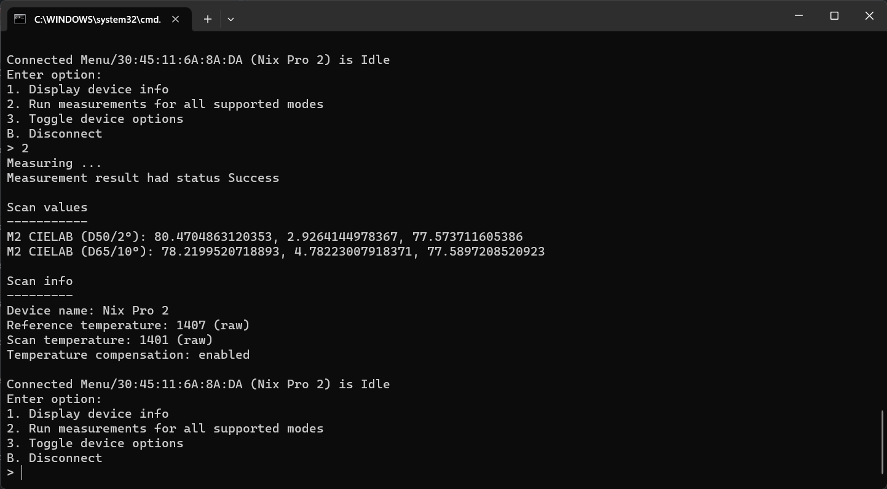
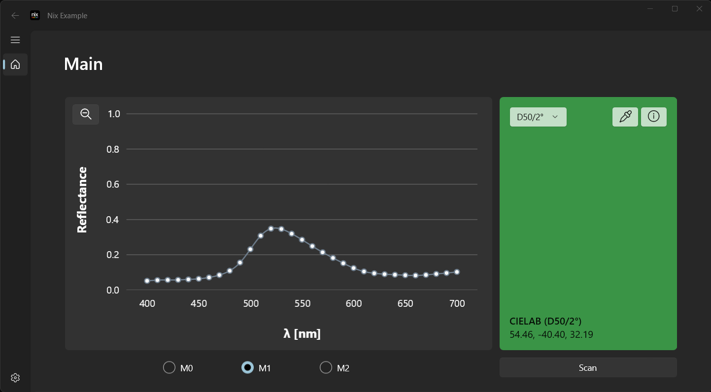

Example Applications
Two example applications and their complete source code are provided with the NixUniversalSDK download, available online. To review the examples, use Visual Studio 2022 to open the nix-universal-sdk-windows-example.sln solution file located in the example-windows folder. The solution contains multiple projects, one for each example application.
Both applications demonstrate:
- Activating and displaying license information
- Device discovery on Bluetooth and USB interfaces
- Opening and closing a connection to a device
- Displaying additional device info (serial number, battery level, etc.)
- Toggling device options (haptic feedback, RGB feedback, etc.)
- Taking measurements
- Obtaining colorimetry and spectral data from measurements
- Performing in-field calibration on the provided reference tile
- Displaying additional measurement information (temperature, scan settings, etc.)
Tip
The example applications will activate the SDK license using values entered in LicenseKey.cs at launch. Both examples also allow entry of different license codes at runtime.
Console Demo
The NixExampleConsole project contains a basic console application, targeting .NET Framework 4.7.2. To run this example:
- Open the
nix-universal-sdk-windows-example.slnsolution file - Update the license information in
NixExampleConsole/LicenseKey.cs - Set
NixExampleConsoleas the 'Startup Project' - Build and run

WinUI3 Demo
The NixExampleWinUI project contains a WinUI3 based application, targeting .NET 8.0. To run this example:
- Open the
nix-universal-sdk-windows-example.slnsolution file - Update the license information in
NixExampleWinUI/LicenseKey.cs - Set
NixExampleWinUIas the 'Startup Project' - Build and run
